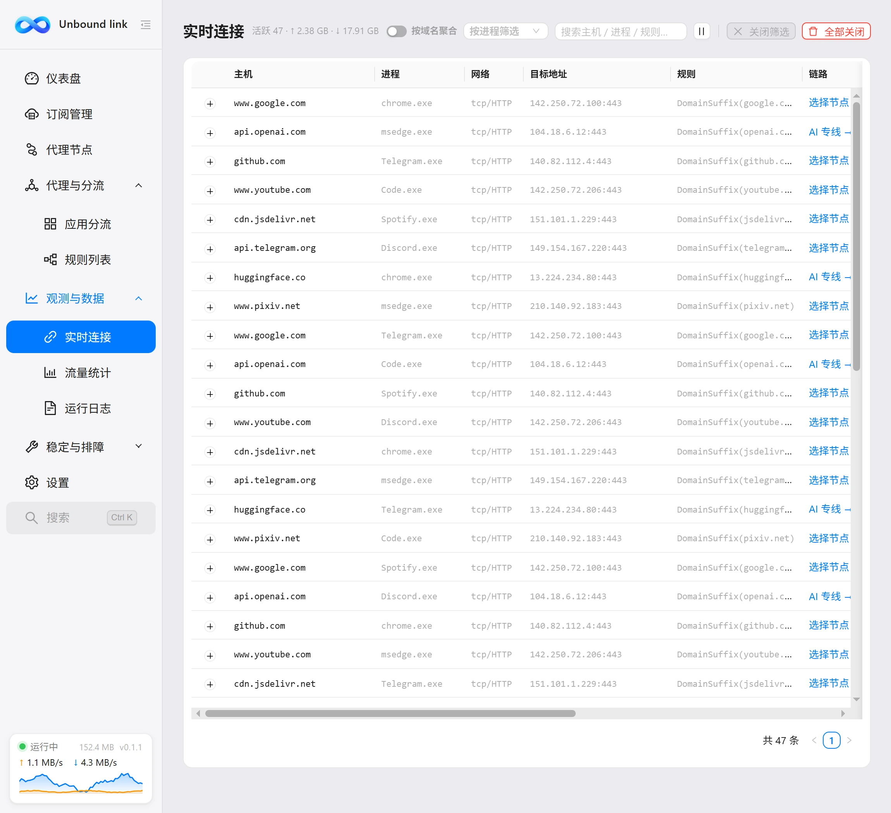
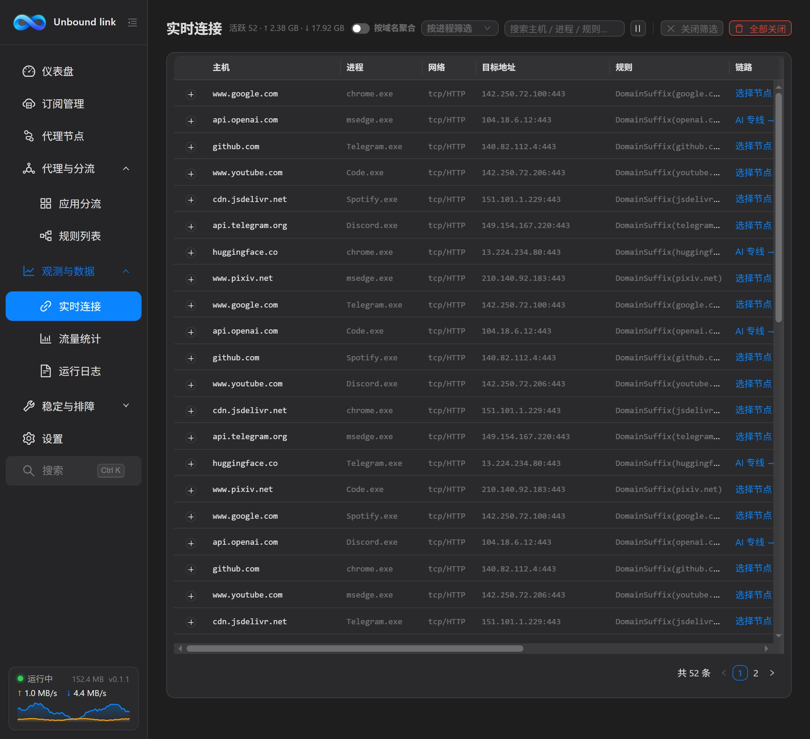

使用手册
实时连接
实时连接页用来查看当前正在联网的连接，并针对域名快速创建规则——不改配置文件，也能马上让某个域名直连或走指定线路。


这一页解决什么
当你不确定「谁在联网」「某个网站走了哪条线」时，就来这里。它把内核此刻正在处理的连接逐条列出，你既能核对分流结果，也能就地修正：右键某条连接，为它的域名创建一条规则。
两种视图
页面支持两种查看方式，切换视图即可：
明细视图——每条连接占一行，适合精确排查单条连接。列包括：
| 列 | 含义 |
|---|---|
| 主机 | 连接的目标主机名。 |
| 进程 | 发起该连接的程序。 |
| 网络 | 连接使用的网络协议，tcp 或 udp。 |
| 目标地址 | 连接实际访问的地址。 |
| 规则 | 这条连接命中的规则。 |
| 链路 | 流量走了哪条线路或代理组。 |
| 上传 / 下载 | 该连接已发送 / 已接收的数据量。 |
| 时长 | 该连接已持续的时间。 |
聚合视图——按域名 / 目标合并同类连接，适合看清整体分布。列包括：域名 / 目标、连接数、进程、规则、链路、上传、下载。
右键创建快捷规则
在任意一条连接行上右键，会弹出菜单，包含以下几项：
- 此域名直连——让该域名的流量直接出去，不走代理。
- 此域名走指定线路——子菜单列出可用代理组，选定后该域名走该组。若无可用组，子菜单显示「暂无可用代理组」。
- 复制域名——把该连接的域名复制到剪贴板。
- 复制目标地址——复制连接的目标地址。
- 复制进程路径——复制发起连接的进程完整路径。
快捷规则怎么生效
选择「此域名直连」或「此域名走指定线路」，会创建一条快捷规则。它的规则类型是 DOMAIN-SUFFIX，生成运行时配置时插入到规则最前面，因此会优先于订阅里的规则，并可立即对该域名生效，无需重启内核。需要撤销时，再次对该域名改选其它线路即可。
两个实用提示
连接的实时速率来自内核，连接关闭后不再显示。页面数据量大时，用上方的搜索 / 筛选缩小范围会更快找到目标连接。